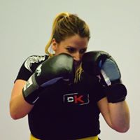

Contact karate
Los llamados deportes de contacto, tal como los conocemos hoy en día, son el resultado de la evolución de diversas artes marciales.
Por tanto podemos decir que en el caso del Kick Boxing Americano y el Oriental, estos llevan impresos en sus genes el Karate Moderno.
Tanto en el Kick Boxing Oriental, originado en Japón, con el llamado Karate de Contacto (Kyokushin) y sus derivados.
Como en el llamado Kick Boxing Americano, que tomó algunos estilos de Karate con influencia de Okinawa, los cuales inundaron el mundo durante gran parte del s. XX, y que en Estados Unidos en la década de los 70´ sirvieron de base marcial, entre otras, para que surgiese la versión occidental de los denominados Deportes de Contacto.
Grandes Maestros y excelentes artistas marciales de diferentes estilos de Karate sentaron las primeras bases de lo que más adelante originaría el boom de las Artes Marciales como espectáculo, que en la actualidad culminan con el K1 y las MMA (Artes Marciales Mixtas). A día de h todas estas disciplinas son reconocidas sistemas de combate por su eficacia y alto nivel de exigencia física.
En este contexto el CONTACT KARATE pretende reivindicar su parte en la historia de los deportes de contacto y que quizás esté algo olvidada. Para ello, el Contact Karate hace uso de lo que sin lugar a dudas es su mayor patrimonio: su metodología, sistema pedagógico y por supuesto su código de valores, el cual se transmite de generación en generación y que todos los practicantes de cualquier Arte Marcial tenemos la obligación de conservar.
Así pues, el Contact Karate es un sistema de combate moderno, siendo su forma de golpeo el pleno contacto, el cual se enseña y practica según los criterios de las Artes Marciales Tradicionales.